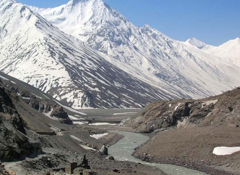
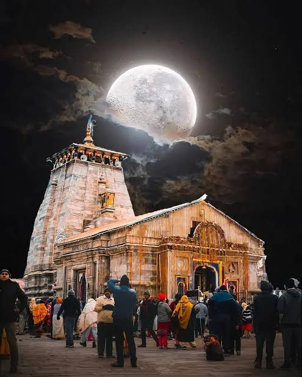
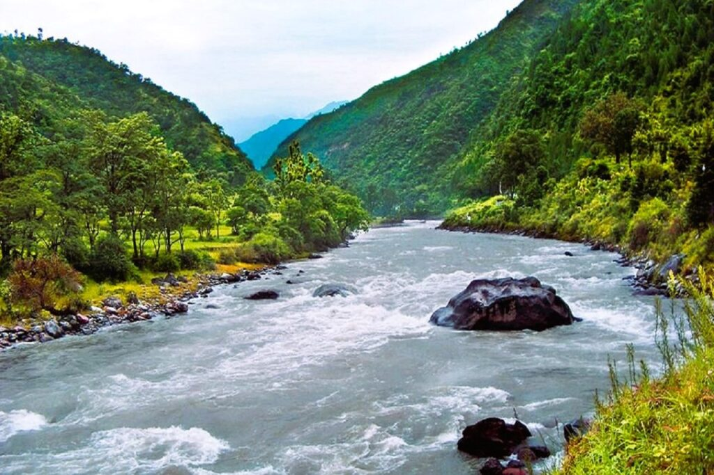
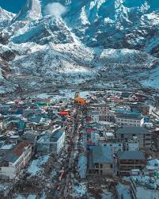

📸 Kedarnath Gallery

Kedarnath Temple

Chorabari / Gandharva Chhaur

Gaurikund (Trailhead)

Vasuki Tal

Triyuginarayan

Temple at Dusk

Mandakini River

Perched high in the Garhwal Himalayas on the banks of the Mandakini River, Kedarnath is one of India’s most sacred Hindu pilgrimage sites — home to the ancient Kedarnath Temple dedicated to Lord Shiva.
The temple town sits amid snow-capped peaks and glaciers and is renowned for its spiritual atmosphere and challenging, yet rewarding, trek from Gaurikund.
The Kedarnath Temple is a revered Hindu pilgrimage site dedicated to Lord Shiva, located in the Garhwal Himalayas of Uttarakhand, India. It is one of the 12 Jyotirlingas and a key site in the Char Dham pilgrimage. Legend says the temple was built by the Pandavas and later re-established by the philosopher Adi Shankaracharya in the 8th century AD. The temple is famous for its Swayambhu Lingam, a natural conical rock formation symbolizing Lord Shiva, and is only open for about six months of the year due to harsh Himalayan winters.
Kedarnatha Temple is a Hindu temple, one of the twelve jyotirlinga of Śiva. The temple is located on the Garhwal Himalayan range near the Mandākinī river, in the state of Uttarakhand, India. Due to extreme weather conditions, the temple is open to the general public only between the months of April and November. During the winters, the vigraha (deity) of the temple is carried down to Ukhimath to be worshiped for the next six months. Kedarnatha is seen as a homogeneous form of Śiva, the 'Lord of Kēdārakhaṇḍa', the historical name of the region.
The temple is not directly accessible by road and has to be reached by a 17 kilometres (11 mi) uphill trek from Gaurikuṇḍa. According to Hindu legends, the temple was initially built by the Pāṇḍavas, and is one of the twelve Jyotirlingas, the holiest Hindu shrines of Śiva. The Pāṇḍava were supposed to have pleased Śiva by doing penance in Kēdāranātha. The temple is one of the four major sites in India's Chota Char Dham pilgrimage of Northern Himalayas and is the first of the Pañca Kēdāra pilgrimage sites. This temple is the highest among the 12 Jyotirlingas. It is one of the 275 paadal petra sthalams expounded in the Tēvaram. This temple is sung of by Tirugnāṇasambandar, Appar, Sundarar and Sekkizhar in their Tēvaram texts.
Kēdāranātha was the worst affected area during the 2013 flash floods in North India. The temple complex, surrounding areas, and Kēdāranātha town suffered extensive damage, but the temple structure did not suffer any major damage. A large rock among the debris acted as a barrier, protecting the temple from the flood.